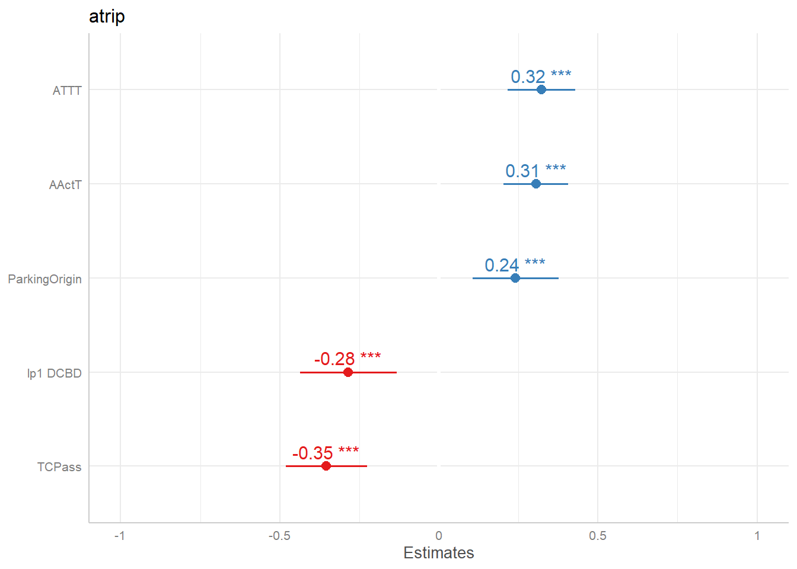

6 Discussion
Mobility measures are dynamic. “Hard” factors, such as number of users and infrastructure, affect “soft” factors, such as users’ behaviors and political environment, which, in their turn, affect “hard” factors. Any survey is but a static representation of this dynamic circle. And any model is but an attempt to represent the relationships as of the moment of the survey.
It is very difficult to capture “soft” trends in regression models with cross sectional data as we observe in this report. The dataset studied herein was collected in 2010, whilst available public statistics were collected in 2017. The average daily trip per person did not change significantly (-0.07) in both datasets, but in 2017 trips were longer in distance (+4.6km) and shorter in duration (-5.2minutes). This suggests an increased car use. The models presented herein - based on the 2010 dataset - do not account for this or for other “soft” trends.
All three models presented herein are significant to predict atrip at the p<.01 level and all satisfy the multiple linear regression assumptions (linearity and additivity, no or little autocorrelation, normality of residuals, no or little multicollinearity and homoscedasticity) (Table 6.1).
| Predictors | Estimates | CI | p | Estimates | CI | p | Estimates | CI | p |
|---|---|---|---|---|---|---|---|---|---|
| (Intercept) | 2.65 | 2.31 – 3.00 | <0.001 | 2.37 | 2.06 – 2.68 | <0.001 | 2.68 | 2.64 – 2.71 | <0.001 |
| AActT | 0.15 | 0.10 – 0.19 | <0.001 | 0.10 | 0.07 – 0.13 | <0.001 | |||
| ATTT | 0.11 | 0.07 – 0.14 | <0.001 | 0.11 | 0.07 – 0.14 | <0.001 | |||
| lp1 DCBD | -0.10 | -0.15 – -0.05 | <0.001 | -0.10 | -0.15 – -0.05 | <0.001 | |||
| ParkingOrigin | 0.35 | 0.15 – 0.55 | 0.001 | 0.37 | 0.16 – 0.57 | <0.001 | |||
| Personal | -0.68 | -1.17 – -0.20 | 0.006 | ||||||
| TCPass | -0.66 | -0.90 – -0.43 | <0.001 | -0.67 | -0.91 – -0.43 | <0.001 | |||
| Work | -0.74 | -1.15 – -0.33 | <0.001 | ||||||
| Peripherality | -0.14 | -0.18 – -0.10 | <0.001 | ||||||
| Activity Level | 0.09 | 0.05 – 0.13 | <0.001 | ||||||
| Private Transport | 0.07 | 0.02 – 0.11 | 0.004 | ||||||
| Observations | 270 | 270 | 263 | ||||||
| R2 / R2 adjusted | 0.388 / 0.371 | 0.354 / 0.342 | 0.178 / 0.168 |
Model 3 is based on the factor analysis results and it most closely resembles the underlying drivers of atrip inferred by the results of the 2017 survey (INE 2018). The independent variables are Peripherality, Activity Level and Private Transportation. Intra/inter municipal trips is not captured by the model.
Model 3 has a small R2 of .178. Its R2 (.178) is barely higher than the R2 of the linear regression with ParkingOrigin alone as independent variable(.116) . Models 1 and 2 have almost twice Model 3’s R2. One possible explanation is that Model 3 does not capture differences between intra /inter municipal trips.
Model 3 is, however, a powerful tool to explain the atrip phenomenon, and it confirms our a priori knowledge of the subject.
Car availability (AvCar, 0.7), ownership of a public transport ticket (TCPass, -0.8), and average time spent travelling per day (ATTT, -0.4) have strong loadings on Private Transportation. This suggests the use of car over public transportation is associated with longer transit times.
Percentage of individuals whose main trip purpose is commuting (Work, 0.9), percentage of individuals whose main trip purpose is shopping (Shop, -0.7), average time in activity (AActT, 0.7) and number of elders in the household (ElderRetired, -0.5) have strong loadings in Activity Level. This is consistent with the 2017 findings that commuting was the main trip purpose and that elders and retired had lower mobility rates than other segments.
Distance from CBD (lp1_DCBD, 0.89), parking pressure (ParkingOrigin, -0.81), distance to metro (AcessMetroResid, 0.67), average time traveled (lp1_ATTD, 0.59), and average number of children (aChildren, 0.40) have strong loadings on Peripherality. Whilst distance to CBD is associated with higher Peripherality, parking pressure and closeness to metro are associated with lower Peripherality and higher centrality. Increased number of children in the household is also associated with higher Peripherality.
Models 1 and 2 have higher R2: .388 and .354, respectively. At first glance Model 1 seems to be better for it explains a higher percentage of atrip´s variance. Upon further analysis, however, it is a poorer fit.
The large quantity of IVs in the original dataset (14) brought at least two different complications to the analysis. The first is a moderate collinearity among the variables and the second is difficulty to interpret causal linkages between the predictors and atrip. Model 1, with 9 IVs, has more collinearity than Model 2, with 7 IVs. Model 2 is superior to Model 1 not only because it reduces collinearity, but also because, in doing so, it becomes easier to interpret. As an example, in Model 1 atrip is positively associated with total number of hours spent in activity until the final trip of the day (AActT) and negatively associated with the percentage of interviewees whose main trip purpose is commuting (Work). From the Correlation Matrix (Figure 4.1) we know that AActT is significantly and positively correlated with Work. No such contradiction exists in Model 2.
The regression equation for Model 2 is:
\[\small atrip=2.37+0.10*AActT+0.11*ATTT+0.37*ParkingOrigin-0.10*lp1_DCBD-0.67*TCPass+ℇ \]
\[ \small where ℇ ∼ N(0, 0.26) \]
The expected mean value of atrip is 2.37 when all independent variables are zero. It is unlikely that this intercept is meaningful for it would mean that an interviewee would spend 0 minutes travelling whilst making 2.37 trips. This inconsistency in the regression equation is a result of atrip and ATTT being average variables.
The regression parameter for AActT indicates that a 1 hour increase in number of hours spend in activity until the final trip of the day is associated with a 0.10 increase in the average trips per day per person in the LMA, holding all other variables constant;
The regression parameter for ATTT indicates that 1 minute increase in number of minutes spent traveling during the day is associated with a 0.11 increase in the average trips per day per person in the LMA, holding all other variables constant;
The regression parameter for ParkingOrigin indicates that an increase of one in the unit in which the indicator parking pressure is measured is associated with a 0.37 increase in the average trips per day per person in the LMA, holding all other variables constant;
The regression parameter for lp1_DCBD indicates that increase in the log of the distance to CBD plus one is associated with a 0.10 decrease in the average trips per day per person in the LMA, holding all other variables constant; and
The regression parameter for TCPass indicates that a 1 percent point increase in the percentage of interviewees holding a Public Transport Pass is is associated with a 0.67 decrease in the average trips per day per person in the LMA, holding all other variables constant.
In terms of contributing to explaining the variability of atrip, ParkingOrigin and AActT are the most important variables (Table 6.2). Parking pressure (ParkingOrigin) is associated both with Peripherality and with Private Transportation. AActT is associated with Activity Level. This suggests that ParkingOrigin and AActT are good proxies of the extracted factors.
| Predictors | Rsq | Adjusted Rsq | Added Adjusted Rsq |
|---|---|---|---|
| Peripherality | 0.116 | 0.112 | 0.112 |
| ParkingOrigin+AActT | 0.223 | 0.217 | 0.105 |
| ParkingOrigin+AActT+ATTT | 0.281 | 0.273 | 0.056 |
| ParkingOrigin+AActT+ATTT+TCPass | 0.321 | 0.31 | 0.037 |
| ParkingOrigin+AActT+ATTT+TCPass+lp1_DCBD | 0.354 | 0.342 | 0.032 |
In terms of weight in the regression equation, all variables contribute similarly, as per the standardized beta coefficients of Model 2 (Figure 6.1).
Figure 6.1: Standardized Beta Coefficients - Model 2
